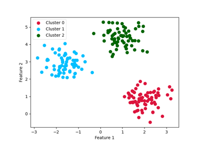
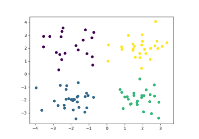
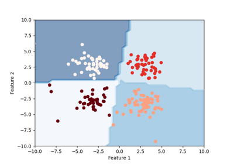
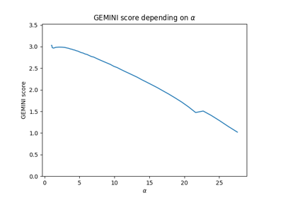
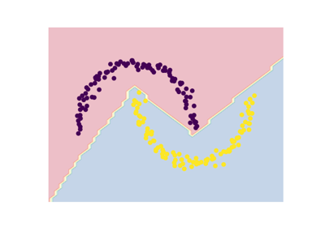
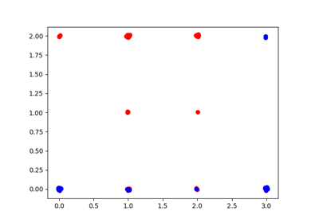
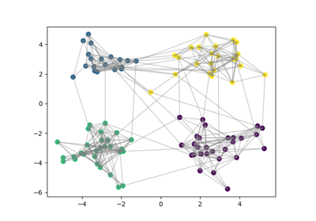

General examples¶
We give here some examples on how to use our base model with GEMINI.

An introducing example to clustering with an MLP and the MMD GEMINI
An introducing example to clustering with an MLP and the MMD GEMINI

Non parametric clustering

Example of decision boundary map for a mixture of Gaussian and low-degree Student distributions
Example of decision boundary map for a mixture of Gaussian and low-degree Student distributions

Feature selection using the Sparse MMD OvO (Logistic regression)
Feature selection using the Sparse MMD OvO (Logistic regression)

Drawing a decision boundary between two interlacing moons
Drawing a decision boundary between two interlacing moons



Grouped Feature selection with a linear model
Grouped Feature selection with a linear model

Graph node clustering with a nonparametric model
Graph node clustering with a nonparametric model